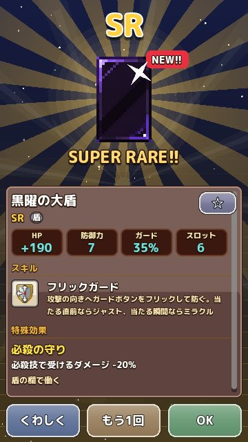

ショップとガチャ
コインで武器と盾を集めるショップのガチャの種類と、チケットの仕組みを解説します。 更新：2026-11-13
ショップのある町
ショップは、平原の村や港町ポトスなど、決まった町にあります。町ごとにガチャの値段と、出てくる装備のレア度の割合がちがいます。先の町ほど値段は上がりますが、レア度の高い装備が出やすくなります。ショップの欄を開くと町を選べるので、手持ちのコインと相談して選んでください。
1 回と 10 連
ガチャは 1 回ずつ引くこともできますし、10 回分をまとめて引く 10 連もあります。10 連では宝箱が並んで次々に開き、レア度の高い装備ほど派手な演出になります。結果の一覧から、そのまま ★ をつけたり、いらないレア度の装備をまとめて売ったりできます。

チケット
10 連ガチャを引くと、回数に応じてチケットがもらえます。
- 10 連を 10 回引くごとに、その世界でいちばん高いレア度が確定するチケット
- 10 連を 50 回引くごとに、1 本で必殺技を出せる武器だけが出る「必殺10連」のチケット
チケットは持ち物から使えます。たくさんガチャを引く人ほど、強い装備に近づけるしくみです。
同じ武器がたくさん集まったら
同じ武器が 10 本そろうと、鍛冶屋の「武器ガチャ」で、その武器のスキルの欄を 1 つ選んで新しい武器に変えられます。ほしいスキルの組み合わせを作りたいときに便利です。
ガチャを引くタイミング
- 新しい町に着いたとき：その町のガチャは、前の町よりレア度の高い装備が出やすくなっています
- コインが十分にたまったとき：10 連はチケットがたまるのでお得です
- 勝てないボスがいるとき：弱点の武器が出るまで、少し前の町のガチャを引くのも手です
ガチャの演出
ガチャを引くと宝箱が開き、レア度によって光の色や演出が変わります。高いレア度の装備が出ると、宝箱が金色に輝き、画面いっぱいに光が広がります。初めて手に入れた装備には「NEW!!」の印がつき、図鑑にも登録されます。